Miranda, Benítez, Éder, Orejuela e Bruno Rodrigues chegam para disputa
de Campeonato Paulista, Brasileirão, Copa do Brasil, e Libertadores
Para saber a quantidade de títulos e o ano da conquista dos títulos
citados acima, clique aqui
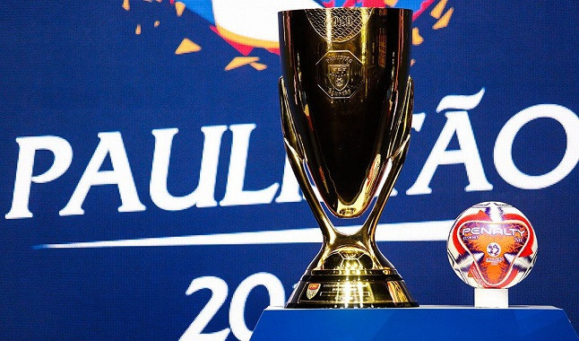
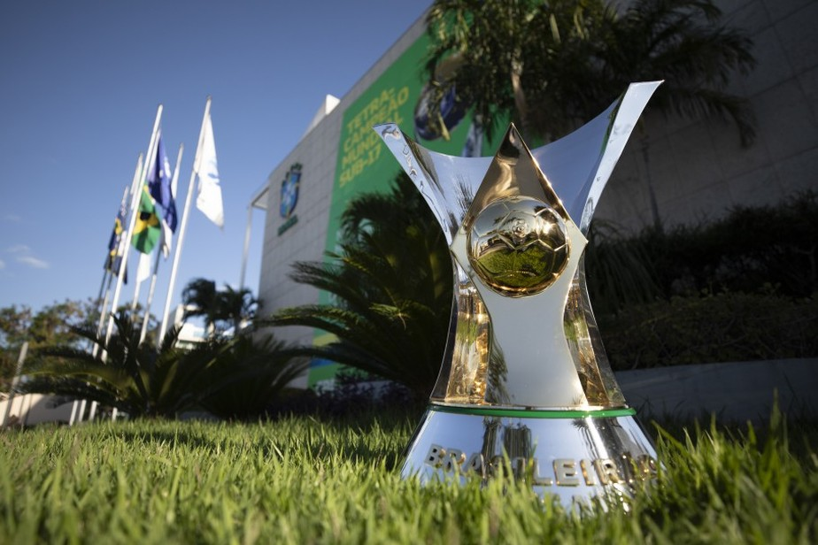
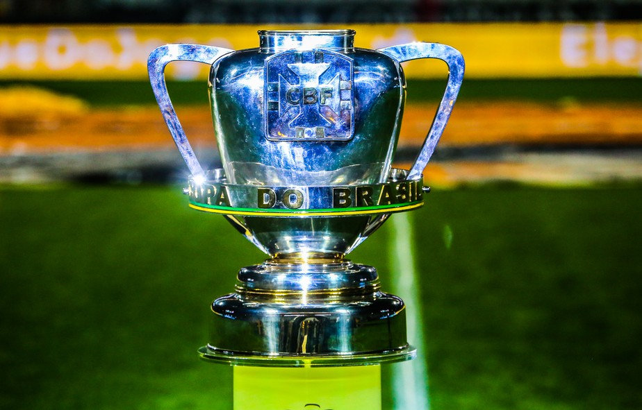
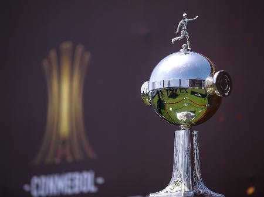
Tricolor paulista acertou a contratação dos jogadores:
Miranda
Tricampeão brasileiro com o clube em 2006, 2007 e 2008
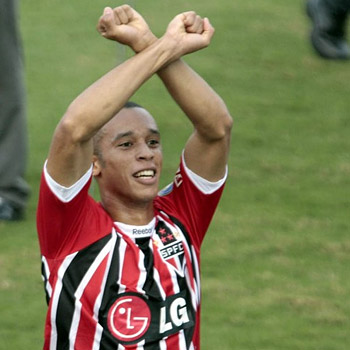
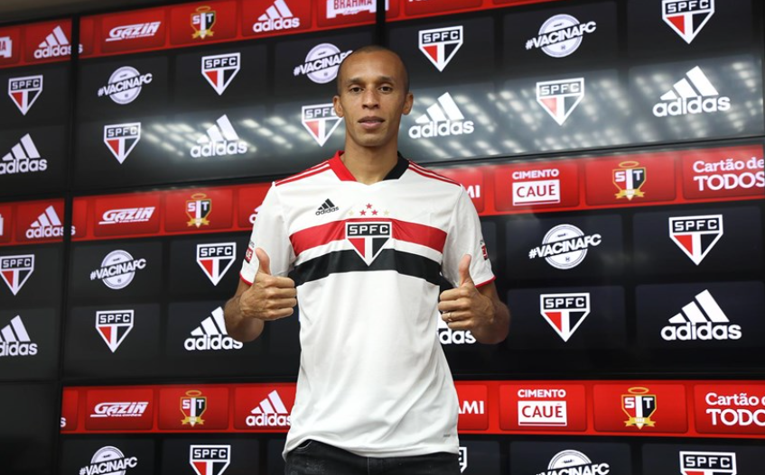
Orejuela
Ex-lateral de Grêmio e Cruzeiro, onde realizou boas passagens
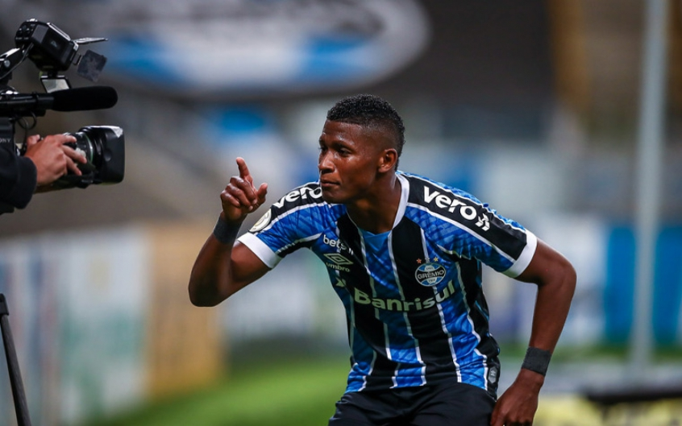
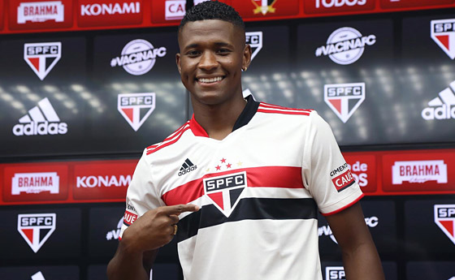
Bruno Rodrigues
Destaque da campanha da Ponte Preta na Série B 2020
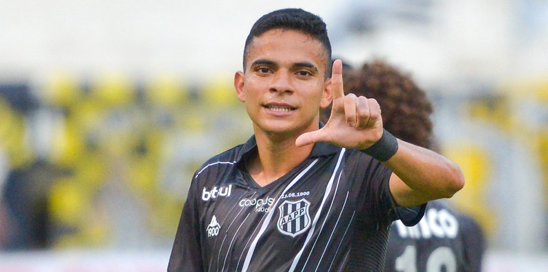
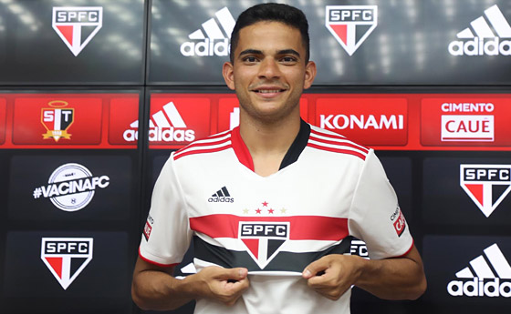
Éder
Ítalo-brasileiro com passagens por Inter de Milão e Seleção
Italiana
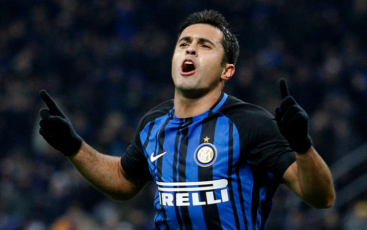
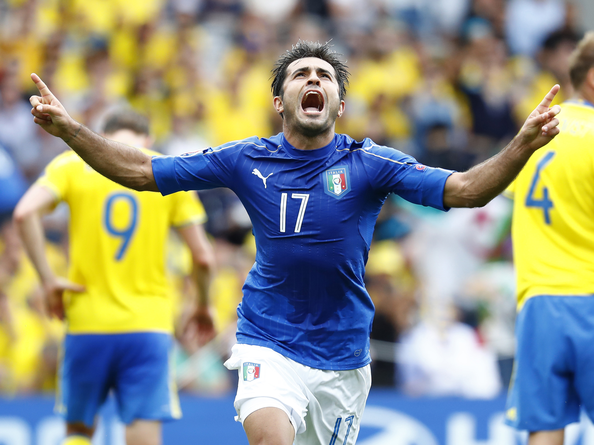
Éder foi companheiro de Miranda no
Jiangsu Suning, da China e na Inter
de Milão, da Itália
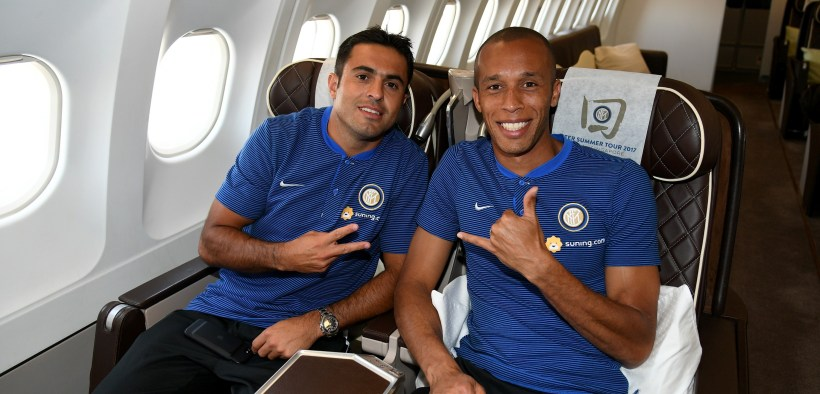
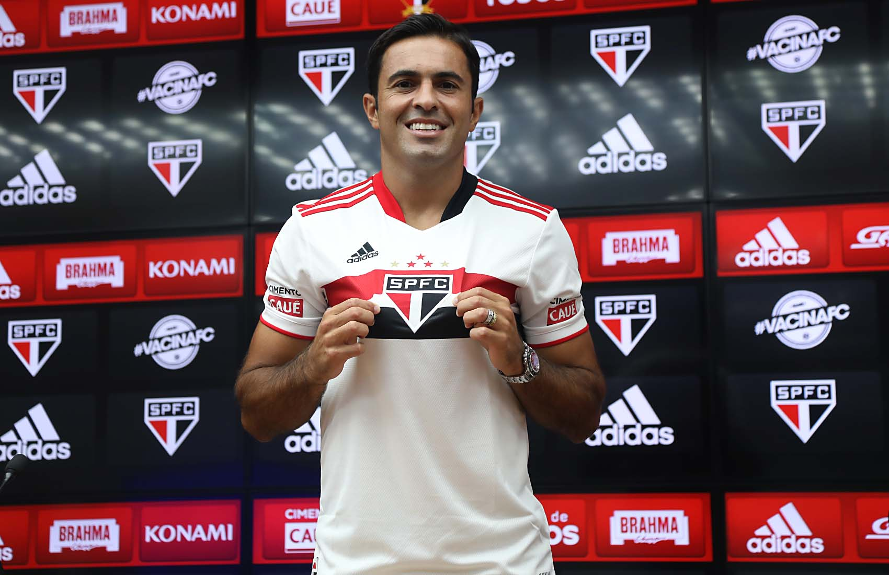
Benítez
Ex-Vasco, o argentino se destacou por sua qualidade técnica, mas
também possuiu destaque negativo em seu histórico de lesões
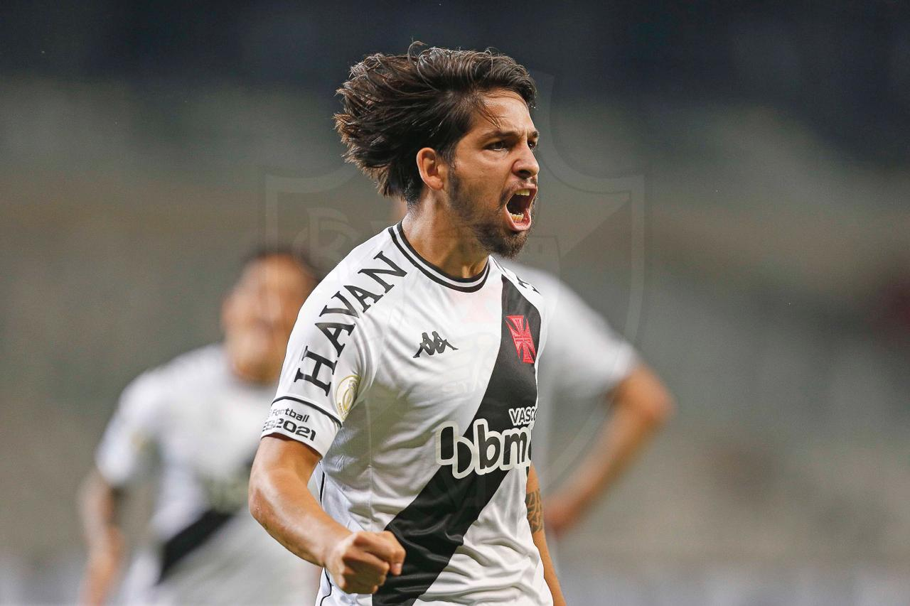
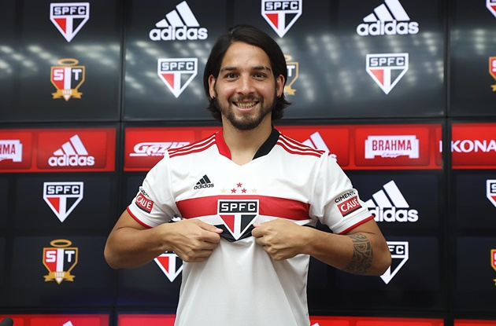
É uma aposta da diretoria tricolor e a nova comissão técnica de Hernan
Crespo, técnico que irá comandar o tricolor paulista na temporada 21/22.
Para tentar sair da seca de títulos, o tricolor paulista que não
conquista um título desde 2012, ano em que
conquistou a Copa Sul-Americana, foi ao
mercado e conseguiu se reforçar bem. O campeonato paulista atualmente
está paralisado, O tricolor paulista obteve os seguintes resultados:
1x1 vs Botafogo-SP
4x0 vs Inter de Limeira
4x0 vs Santos
1x2 vs Grêmio Novorizontino
5x1 vs São Caetano
É um início promissor de Crespo, que nessas partidas ainda não pode
utilizar todos seus reforços, somente Bruno Rodrigues estava a
disposição. A diretoria do São Paulo ainda busca um zagueiro
canhoto, pedido de Crespo.
Será que esse ano o Tricolor voltará a conquistar um título após
8 anos?Para saber mais,
clique aqui